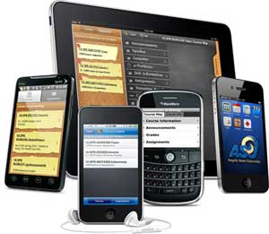

Mobile hardware includes mobile devices or device components that receive or access the service of mobility. They would range from portable laptops, smartphones, tablet Pc's, Personal Digital Assistants.
These devices will have a receptor medium that is capable of sensing and receiving signals. These devices are configured to operate in full- duplex, whereby they are capable of sending and receiving signals at the same time. They don't have to wait until one device has finished communicating for the other device to initiate communications. Above mentioned devices use an existing and established network to operate on. In most cases, it would be a wireless network. (ref by :tutorialspoint)
| Company name | Market |
|---|---|
| Samsung | 296.294 million (19.2 % market share) |
| Huawei | 240.615.5 million (15.6 % market share) |
| Apple | 193.475.1 million (10.5 % market share) |
| Xiaome | 126.049.2 million ( 8.2 % market share) |
| Oppo | 118.693.2 million ( 7.7 % market share) |
| others | 565.630 million ( 36.7 % market share) |
(Reference telegraph)